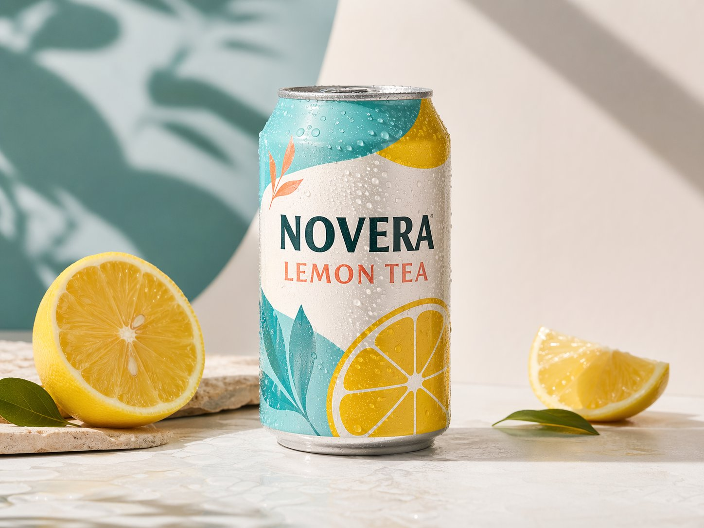
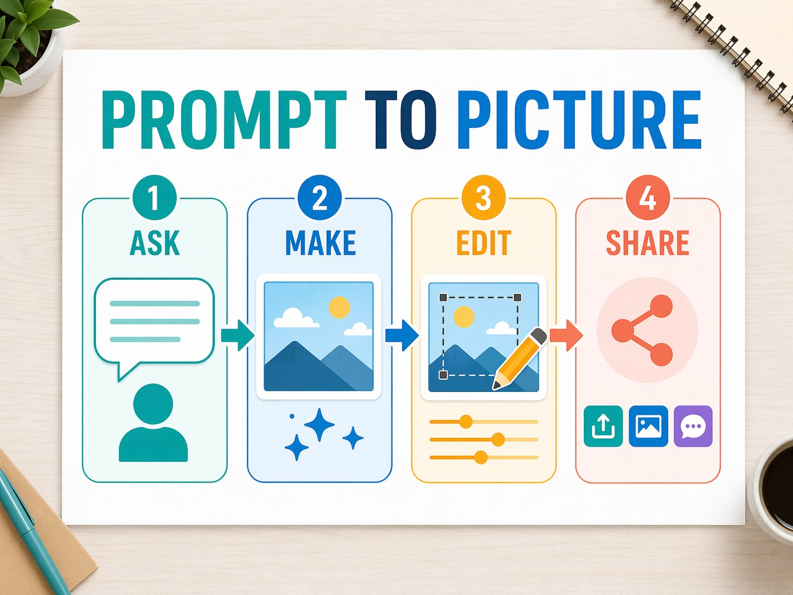
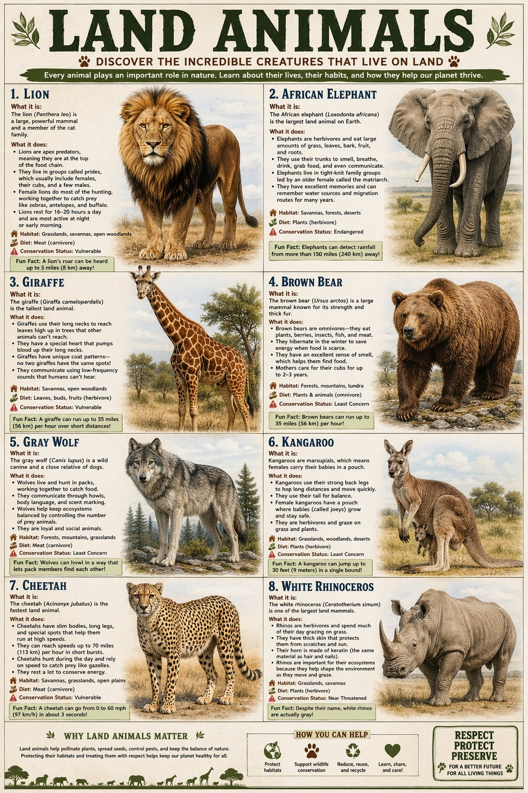
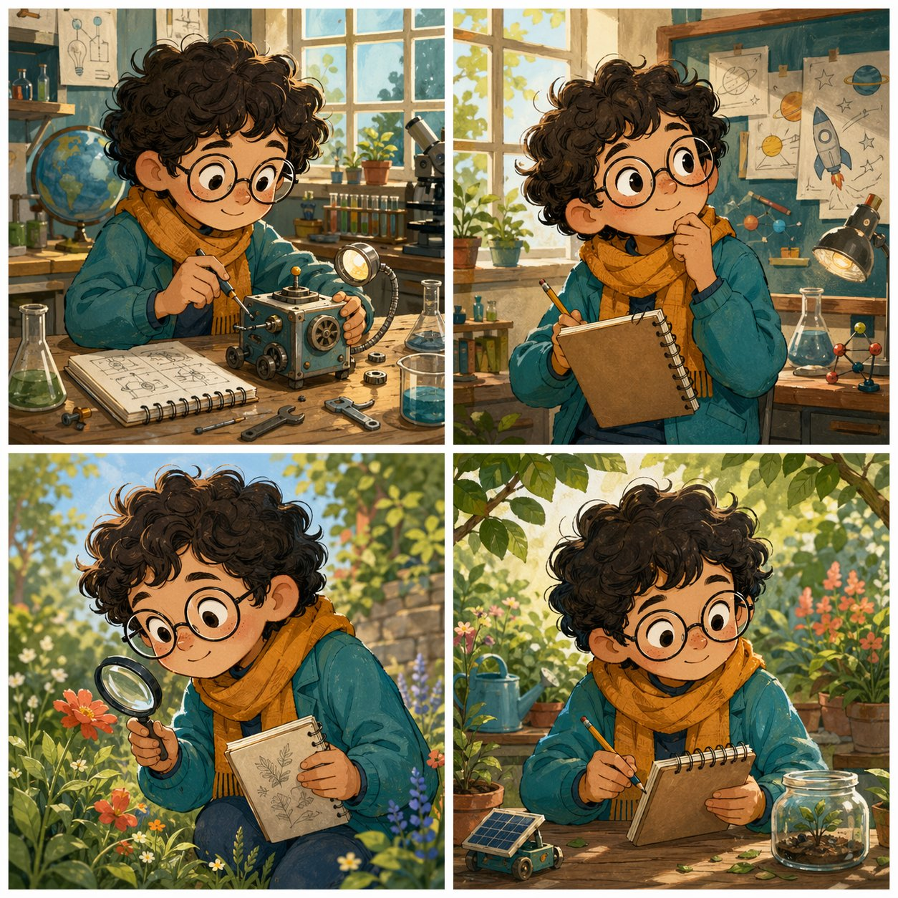

ChatGPT Images 2.0 / GPT Image 2
ChatGPT Images 2.0: The New AI Image Tool Explained
The new image tool is not just "make me a picture." It can draft product shots, posters, storyboards, UI ideas, realistic photos, style variations, and careful edits from normal language. Here is the simple version, with examples made for this guide.

Quick Answer
ChatGPT Images 2.0 is OpenAI's public product name for the new image generation experience in ChatGPT. GPT Image 2 is the related model name used in the OpenAI API docs. "ChatGPT 2.0" by itself is not the official name of the whole ChatGPT product.
What it does
Turns plain text, reference images, and edit instructions into finished pictures.
What is better
Stronger prompt following, better text, better edits, and more natural results.
What to upload
No photo needed for new images. Upload one only when you need a real edit or reference.
What to check
Spelling, faces, hands, numbers, logos, layout, and anything factual.
What Is ChatGPT Images 2.0?
ChatGPT Images 2.0 is OpenAI's public name for the newer image generation experience in ChatGPT. GPT Image 2 is the related model name used in the OpenAI API docs for developers.
The simplest way to think about it: it is like having a junior designer, photo editor, illustrator, and moodboard maker inside the chat. The human still chooses the taste and direction. The model handles the first draft, the variations, and the repetitive visual changes much faster than doing everything by hand.
What Can It Make?
The examples below were generated for this guide. They show the range: text on packaging, infographics, detailed educational posters, recurring characters, natural photography, surreal world-building, UI mockups, and style control.




What Is Different From the Older ChatGPT Image Model?
The big change is reliability. Older image models were impressive, but they often did "vibes first, instructions second." The newer image tools are much better at following detailed instructions, preserving important parts of an input image, and producing pictures that need fewer retries.
| Capability | Older image tools often did this | ChatGPT Images 2.0 / GPT Image 2 does this better |
|---|---|---|
| Prompt following | Got the main idea, then ignored a few small rules. | Follows longer prompts and specific constraints more reliably. |
| Text in images | Made signs, labels, and posters with strange spelling. | Handles readable labels and short poster text much better. |
| Editing | Changed too much when you only wanted one fix. | Can preserve lighting, composition, likeness, and key details more carefully. |
| Reference images | Used references loosely and sometimes lost the important thing. | Can use image inputs at high fidelity, especially useful for product and brand work. |
| Natural results | Sometimes looked glossy, fake, or too smooth. | Can make more believable photos, textures, lighting, and everyday scenes. |
| Workflow | Mostly felt like one big attempt. | Works better as a conversation: make, review, edit, refine, export. |
How to Use It to Its Fullest
The secret is not fancy wording. The secret is giving the model the same information a designer would ask you for before starting.
Use
Say where the image will live: blog hero, poster, product ad, thumbnail, menu, flyer, app mockup.
Subject
Name the main thing clearly. One product, one room, one person, one scene, or one diagram.
Style
Choose the medium: photo, 3D render, watercolor, editorial illustration, infographic, realistic UI.
Rules
Add must-have details, exact text, size, colors, and what to avoid.
A Strong Beginner Prompt
Create a landscape blog hero image for an article about small businesses using AI. Show a friendly desk scene with a laptop, a notebook, product samples, and social media drafts. Style: realistic editorial photography. Mood: bright, practical, not futuristic. Colors: white, teal, blue, amber, and coral. Leave clean space near the top left for the headline. No logos, no fake brand names, no watermark.
The Better Way to Iterate
Do not regenerate blindly ten times. Treat it like a conversation. Give one change at a time, and tell it what must stay the same.
Make One Change
Keep the same composition, but make the lighting warmer and the background less busy.
Protect the Good Parts
Keep the product label, camera angle, and colors. Only change the table surface to dark wood.
Ask for Variations
Create three versions: one minimal, one playful, and one premium. Keep the same subject.
Finish Like a Pro
Now make it cleaner for publication: fewer background objects, sharper edges, and better spacing.
Editing, Reference Images, and When You Should Upload a Photo
You do not need to upload a photo when you are creating a brand-new image from an idea. A text prompt is enough. Upload a photo when you want ChatGPT to change, preserve, or reference something real.
Upload a photo when...
You want to edit your room, product, outfit, menu, logo draft, website screenshot, or existing ad.
Do not upload when...
You only need a new concept, moodboard, fictional product, illustration, poster, or thumbnail.
Use a reference when...
You want the style, object, face, pose, product shape, or colors to stay close to a source image.
Use a selected area when...
You want only one part changed, like the sky, a background, a sign, or an object on a table.
Editing Prompt Template
Edit this image. Change only [the exact part]. Keep [the parts that must not change] exactly the same. Match the same lighting, camera angle, shadows, and texture. Do not add logos, extra objects, or extra text.
What It Still Gets Wrong
This is the part people skip, then they wonder why a poster has one weird letter in the corner. The tool is powerful, but it is not magic and it is not a fact checker.
Text Can Still Break
Short labels are much better. Long paragraphs, tiny text, and exact spacing still need checking.
Layout Is Not Perfect
It can misplace objects if you ask for a very strict diagram or exact design grid.
Consistency Can Drift
A character, product, or logo can slowly change across many generations unless you use references.
Facts Need Humans
Maps, medical diagrams, historical scenes, labels, quantities, and technical details need verification.
Some Requests Are Blocked
Prompts and outputs are filtered by safety systems, so some content cannot be generated.
Transparent Backgrounds
The official GPT Image 2 docs say transparent background requests are not currently supported.
Fun Prompts to Try
Use these as starting points. Replace the bracketed parts with your own business, hobby, product, or idea.
Product Ad
Create a premium product photo for [product]. Show it on a clean studio surface with realistic shadows, condensation, and one prop that explains the flavor. No logos except the fictional label text: "[exact text]".
Mini Poster
Create a beginner-friendly poster explaining [topic] in four steps. Use large, readable headings only. Keep the design simple, bright, and easy to scan.
Room Makeover
Edit this room photo into a calm modern workspace. Keep the walls, windows, and camera angle the same. Change only the furniture, lighting, and small decor.
Character Sheet
Create a four-panel character sheet for an original [character type]. Keep the face, outfit, colors, and accessories consistent in every panel.
Style Test
Show the same [object] in four styles: photoreal product photo, watercolor, clay 3D render, and flat editorial poster. Keep the object shape consistent.
Website Hero
Create a wide website hero image for [page topic]. Leave clean space for a headline, use natural lighting, and avoid fake text, logos, and clutter.
FAQ
Is ChatGPT 2.0 the real name?
Close, but the important word is "Images." OpenAI's public product name is ChatGPT Images 2.0. The API model name in the developer docs is GPT Image 2. "ChatGPT 2.0" by itself can sound like a whole new ChatGPT version, not the image generation feature.
Can it edit my own photos?
Yes, if you provide the photo and clearly explain what should change and what must stay the same. For precise edits, reference images and masks help.
Can it make logos?
It can explore logo ideas and visual directions, but final logos should still be cleaned up in vector design software and checked for trademark issues.
Can I trust text inside the image?
Trust it only after checking. Text is much better than it used to be, especially short labels, but spelling and tiny typography can still go wrong.
What should I avoid uploading?
Avoid sensitive documents, private customer data, images of people without permission, confidential business material, and anything you would not want processed by an online service.
Read Next
Sources Checked
This guide was written from first-hand testing and checked against current official OpenAI pages on 22 April 2026.